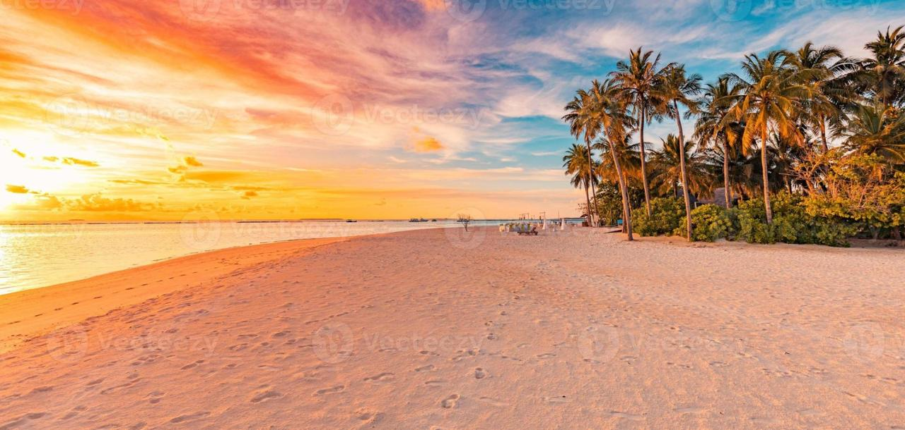
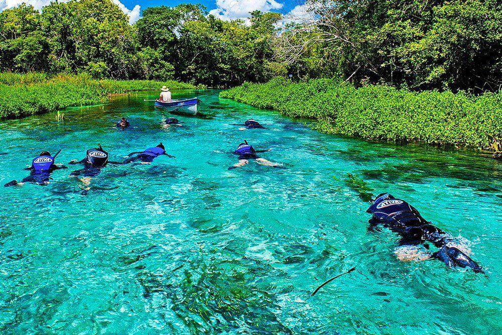

A "História da beira da lagoa da confusão" refere-se à origem do nome do município de Lagoa da Confusão, no Tocantins, atribuída às dificuldades enfrentadas pelos primeiros desbravadores para chegar à lagoa, ou a uma lenda sobre uma pedra que mudava de lugar, criando uma sensação de movimento e confusão.
PRAÇA DA ORLA DA LAGOA

PEDRA MISTERIOSA
Uma lenda que se mistura à história da chegada dos primeiros desbravadores da região, que enfrentaram muitas dificuldades e, vendo a pedra mudar de lugar conforme o ângulo da visão e a incidência do sol, batizaram a lagoa de "Confusão".
DICOS BARCOS

A história da cidade começou em 1933, com a chegada das primeiras famílias, que foram surpreendidas por uma imensa lagoa cercada por serras e pântanos, tornando a chegada um verdadeiro desafio.
MURO DE LAGOA DA CONFUSÃO
Não existe um muro construído em Lagoa da Confusão, mas sim uma "pedra da confusão" que aparece e desaparece na lagoa, dando o nome à cidade. A dificuldade que os primeiros desbravadores enfrentaram ao chegar à região também contribuiu para o nome, gerando uma atmosfera de "confusão".